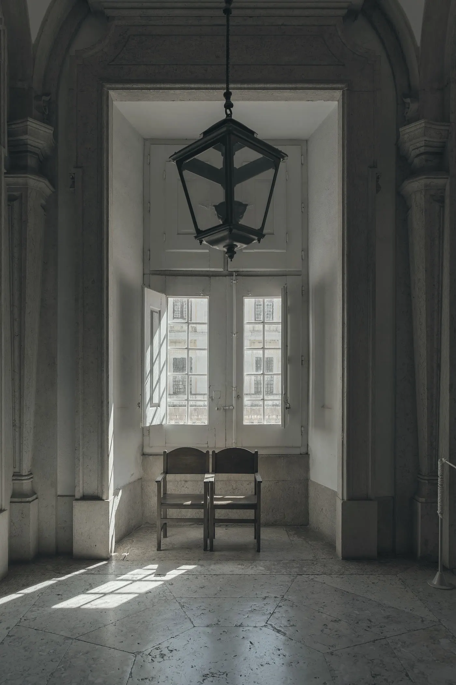
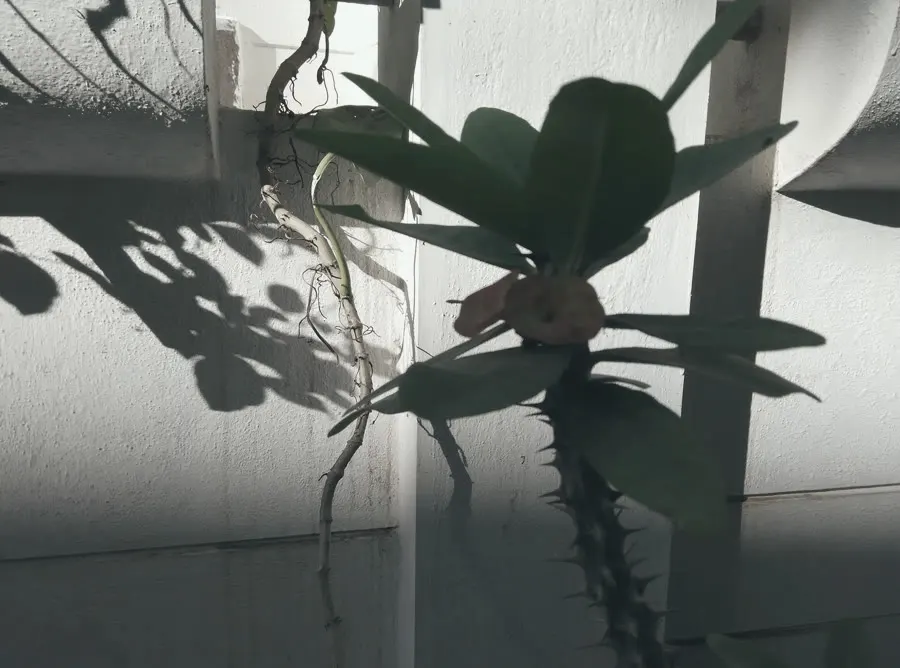

Glauce sobrenome a confirmar, psicóloga
Psicoterapia
para falar do que pesa,
no seu tempo.
Atendimento psicológico individual, presencial em cidade a confirmar e online. A primeira conversa é para você contar o que está acontecendo, sem pressa.

Foto provisória. Entra a sala da Glauce.
Muita gente adia a terapia porque não sabe por onde começar, ou acha que o que sente não é grande o bastante. Não precisa chegar com tudo explicado. Você fala do jeito que der, e a gente organiza junto, uma sessão de cada vez.
Atendimento
Públicos e abordagem a confirmar com a Glauce. A lista abaixo é o desenho da seção, não o texto final.
A porta se fecha para a conversa começar.
O que é dito aqui,
fica aqui.
O sigilo é dever da psicóloga, previsto no Código de Ética Profissional do Psicólogo. O que você conta na sessão não sai da sala, salvo as raras exceções que o próprio Código prevê.
Presencial ou por vídeo, o cuidado com o sigilo é o mesmo.
Como
funciona
- 1
A primeira mensagem
Você manda uma mensagem pelo WhatsApp. Pode ser curta: seu nome e se prefere presencial ou online.
- 2
A primeira conversa
Você conta o que te trouxe, no seu ritmo. É também a hora de tirar dúvidas sobre como a terapia funciona.
- 3
Os combinados
Dia, horário, frequência e valor são combinados com clareza antes de começar.
- 4
As sessões
Encontros regulares de duração a confirmar, no mesmo horário, presenciais ou por vídeo.
Fotos provisórias de banco livre, com o mesmo tratamento. Na versão final entram as fotos da Glauce e do consultório.
A terapia não tem pressa de chegar a lugar nenhum. Ela começa onde você está.

Perguntas
Como sei se é hora de procurar terapia?
Não existe tamanho mínimo de problema. Se alguma coisa vem ocupando muito espaço, atrapalhando o sono, o trabalho ou as relações, já é motivo para conversar.
A terapia online funciona do mesmo jeito?
A sessão online segue o mesmo cuidado e o mesmo sigilo da presencial. Você só precisa de um lugar reservado e de uma conexão estável. O atendimento online de psicólogos é regulamentado pelo Conselho Federal de Psicologia, com cadastro no e-Psi (a confirmar).
Quanto custa?
O valor é combinado diretamente com a Glauce na primeira conversa, junto com a frequência das sessões.
Quanto tempo dura cada sessão?
Duração a confirmar. A frequência costuma ser semanal e é ajustada com você.
E se for uma emergência?
A psicoterapia não é um serviço de urgência. Em crise ou risco, ligue 188 (CVV, 24 horas, gratuito) ou 192 (SAMU), ou vá ao pronto-socorro mais próximo.
Para marcar
a primeira conversa
Mande uma mensagem com seu nome e se prefere presencial ou online. A resposta vem pelo mesmo canal.
- a confirmar
- Onde
- endereço e cidade a confirmar e online
- Horários
- a confirmar
- a confirmar